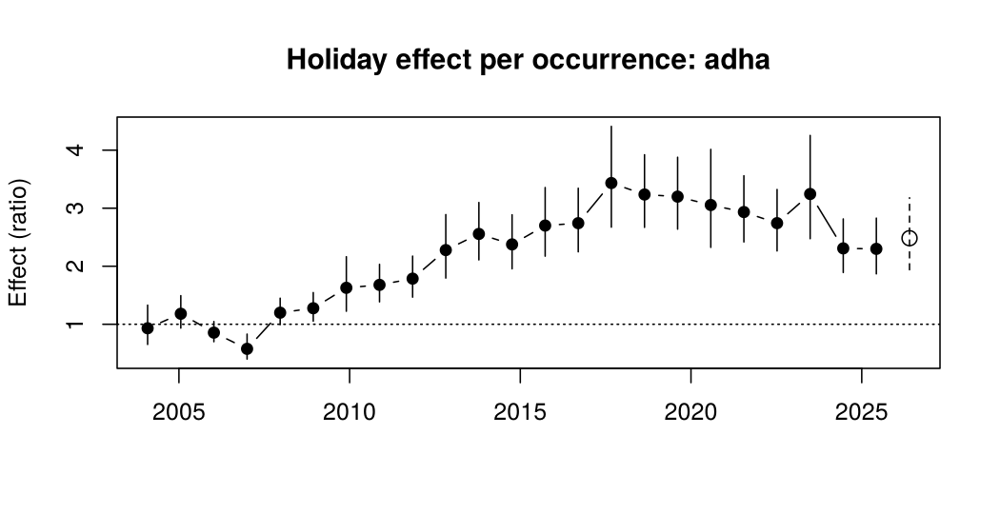
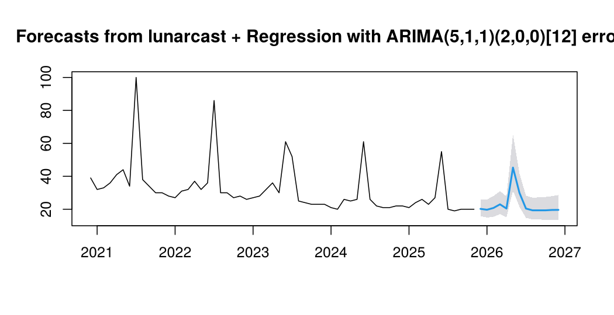
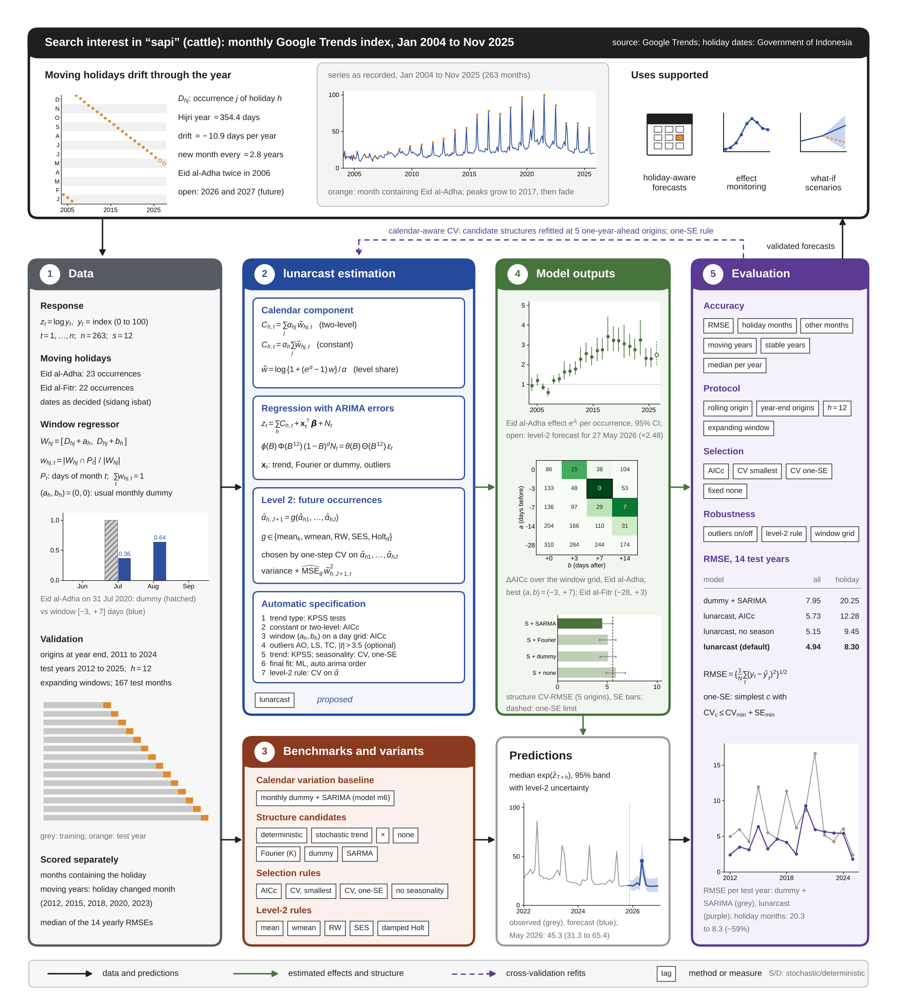

lunarcast forecasts monthly and quarterly time series that react to moving holidays: holidays whose Gregorian date changes every year, such as Eid al-Fitr, Eid al-Adha, the Chinese New Year and Easter. Most of them follow the moon, hence the name.
The classical calendar variation model puts a dummy for the holiday month into a regression with ARIMA errors and assumes the same effect every year. lunarcast relaxes each of its assumptions:
- Window regressors. A holiday affects the days around it, so the effect is spread over the months in proportion to the days of a window around the holiday that fall in each month. The window is selected from the data.
- Two-level effects. Every occurrence of a holiday gets its own effect (level 1), and the effect of the next occurrence is forecast from the sequence of past effects (level 2), with its uncertainty.
- Calendar-aware selection. After the calendar part has been specified, so that the seasonal part cannot absorb the holiday effect, the trend type is chosen by KPSS tests and the seasonality (none, Fourier terms, dummies or seasonal ARIMA, the building blocks of the six classical structures) by cross-validated forecasts with a one-standard-error rule.
The classical model is included too (calvar_classic()), as a benchmark and as a special case of lunarcast.
Installation
lunarcast is not on CRAN yet. Install the development version from GitHub:
# install.packages("pak")
pak::pak("novrisuhermi/lunarcast")pak::pak() does not build the vignettes; read them online at https://novrisuhermi.github.io/lunarcast/vignettes/ or install with:
# install.packages("remotes")
remotes::install_github("novrisuhermi/lunarcast", build_vignettes = TRUE)
browseVignettes("lunarcast")lunarcast needs R 4.1 or later and depends only on the forecast package.
Example
sapi is the monthly Google Trends index for “sapi” (cattle) in Indonesia. Searches peak before Eid al-Adha, when cattle are bought for the sacrifice.
library(lunarcast)
hol <- list(adha = holiday_dates("idul_adha"),
fitri = holiday_dates("idul_fitri"))
fit <- lunarcast(sapi, hol) # fully automatic, about a minute
fit
#> lunarcast: Regression with ARIMA(5,1,1)(2,0,0)[12] errors | AICc = -296.9
#> Structure (cv, 1se): stochastic + SARMA(2,0,0), d = 1
#> Cross-validated RMSE of the candidate structures:
#> structure RMSE SE
#> stochastic + SARMA(2,0,0) 4.53 1.017
#> stochastic + fourier(K=4) 5.08 0.821
#> stochastic + dummy 5.10 0.795
#> stochastic + none 5.86 0.962
#>
#> adha: two-level effect, window [-3, +7] days, level 2 = wmean (CV-RMSE 0.13)
#> event alpha se ratio
#> 2004-02-01 -0.0712 0.1816 0.931
#> 2005-01-21 0.1664 0.1196 1.181
#> 2006-01-10 -0.1558 0.1029 0.856
#> 2006-12-31 -0.5505 0.1860 0.577
#> 2007-12-20 0.1819 0.0964 1.199
#> 2008-12-08 0.2440 0.0978 1.276
#> 2009-11-27 0.4874 0.1452 1.628
#> 2010-11-17 0.5180 0.0976 1.679
#> 2011-11-06 0.5801 0.1003 1.786
#> 2012-10-26 0.8234 0.1213 2.278
#> 2013-10-15 0.9386 0.0980 2.556
#> 2014-10-05 0.8655 0.0993 2.376
#> 2015-09-24 0.9935 0.1108 2.701
#> 2016-09-12 1.0087 0.1012 2.742
#> 2017-09-01 1.2335 0.1277 3.433
#> 2018-08-22 1.1742 0.0980 3.236
#> 2019-08-11 1.1629 0.0981 3.199
#> 2020-07-31 1.1167 0.1392 3.055
#> 2021-07-20 1.0764 0.0985 2.934
#> 2022-07-10 1.0088 0.0979 2.742
#> 2023-06-29 1.1770 0.1382 3.245
#> 2024-06-17 0.8363 0.1013 2.308
#> 2025-06-06 0.8326 0.1057 2.299
#>
#> fitri: constant effect, window [-28, +3] days
#> alpha se ratio
#> 0.147 0.0346 1.16The selected model spreads Eid al-Adha over a window from 3 days before to 7 days after the holiday, lets its effect differ every year, and adds a constant Eid al-Fitr effect over the last four weeks of Ramadan.
plot(fit)
The effect of Eid al-Adha grew from almost nothing in 2004 to more than three times the usual level and has declined since; the open circle is the forecast for the next occurrence.

fc$future_effects
#> $adha
#> event alpha se method ratio
#> 1 2026-05-27 0.9095093 0.126112 wmean 2.483104Scenarios fix the effect of the next occurrence:
sc <- forecast(fit, h = 13, level2 = list(adha = log(2))) # doubles the level
round(cbind(model = fc$mean, scenario = sc$mean)[5:7, ], 1)
#> model scenario
#> [1,] 20.4 20.4
#> [2,] 45.3 37.6
#> [3,] 29.9 27.1The classical model in one line, here m6 (stochastic trend and seasonality):
calvar_classic(sapi, hol$adha, trend = "stochastic", season = "stochastic")
#> Classical calendar variation model: stochastic trend + stochastic seasonality
#> Regression with ARIMA(1,1,1)(1,0,2)[12] errors | AICc = 1708.9
#> Holiday effect (same every year): 18.92 (s.e. 2.01), original scaleHow it works

On the log scale, with ,
where is the date of occurrence of holiday , the days of month , maps the window shares to the log scale, holds the trend, seasonal and outlier regressors and is an ARIMA error. The next effect is forecast as , with chosen by cross-validation among the mean, a precision-weighted mean, a random walk, exponential smoothing and damped Holt.
The full explanation, written to be read without prior knowledge of calendar effects, is in vignette("theory").
Does it forecast better?
Fourteen test years (2012 to 2025) of rolling-origin forecasts of sapi (see vignette("classic-vs-lunarcast")):
| Model | RMSE | RMSE in holiday months |
|---|---|---|
| Classical m1 (deterministic trend, dummies) | 10.42 | 27.12 |
| Classical m6 (stochastic trend and seasonality), best classical | 7.95 | 20.25 |
| lunarcast, structure chosen by AICc | 5.73 | 12.28 |
| lunarcast (default) | 4.94 | 8.30 |
These results come from a single series; they show what the method can do, not a general ranking.
Functions
| Function | Purpose |
|---|---|
lunarcast() |
automatic two-level calendar variation model |
forecast() |
forecasts and scenarios for every model in the package |
holiday_effects() |
effect of every holiday occurrence |
calvar_classic(), calvar_classic_all()
|
classical model, structures m1 to m6 |
holiday_dates(), easter_dates()
|
Indonesian holiday dates, Easter-based holidays |
holiday_window() |
window regressors from any vector of dates |
rolling_origin(), rolling_summary()
|
calendar-aware rolling-origin evaluation |
forecast_accuracy() |
RMSE, MAE, MAPE and sMAPE |
Learn more
The vignettes are available already run and rendered, as on CRAN, at https://novrisuhermi.github.io/lunarcast/vignettes/:
- Get started with lunarcast: a complete analysis step by step.
- How lunarcast works: the theory, with equations.
- From the classical model to lunarcast: the classical models m1 to m6 and the evaluation.
- Panduan lunarcast (Bahasa Indonesia): panduan dalam Bahasa Indonesia.
The package website, https://novrisuhermi.github.io/lunarcast/, has the same articles and the reference of every function.
Ringkasan (Bahasa Indonesia)
lunarcast adalah package R untuk memodelkan dan meramal deret waktu bulanan atau kuartalan yang dipengaruhi hari raya bergerak, seperti Idul Fitri, Idul Adha, Imlek, dan Paskah. Dibanding model variasi kalender klasik (dummy bulan hari raya dengan efek tetap), lunarcast:
- menyebar efek hari raya ke beberapa bulan sesuai porsi hari dalam jendela di sekitar hari raya, dengan jendela yang dipilih otomatis;
- memberi setiap kejadian hari raya efeknya sendiri dan meramal efek kejadian berikutnya dari deret efek sebelumnya (model dua level);
- memilih struktur tren dan musiman lewat validasi silang yang sadar kalender.
Instalasi: pak::pak("novrisuhermi/lunarcast"). Panduan lengkap berbahasa Indonesia: vignette("panduan-indonesia").
Code of Conduct
Please note that the lunarcast project is released with a Contributor Code of Conduct. By contributing to this project, you agree to abide by its terms.